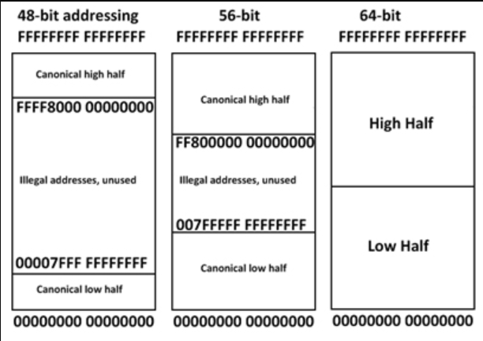

A canonical address must have its most significant bits (MSBs) either all set to 1 or all set to 0.
The number of MSB's is dependent on the platform (see MAXPHYADDR).
From the manual
"In 64-bit mode, an address is considered to be in canonical form if address bits 63 through to the most-significant implemented bit by the microarchitecture are set to either all ones or all zeros.
"

